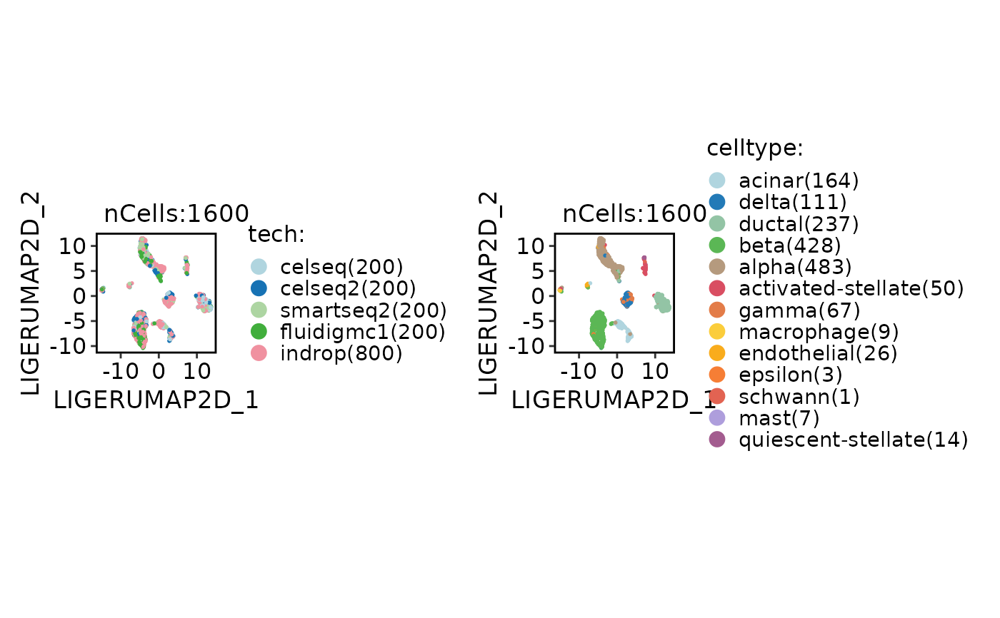

LIGER integration function
Usage
LIGER_integrate(
srt_merge = NULL,
batch = NULL,
append = TRUE,
srt_list = NULL,
assay = NULL,
do_normalization = NULL,
normalization_method = "LogNormalize",
do_HVF_finding = TRUE,
HVF_source = "separate",
HVF_method = "vst",
nHVF = 2000,
HVF_min_intersection = 1,
HVF = NULL,
do_scaling = TRUE,
vars_to_regress = NULL,
regression_model = "linear",
liger_dims_use = NULL,
nonlinear_reduction = "umap",
nonlinear_reduction_dims = c(2, 3),
nonlinear_reduction_params = list(),
force_nonlinear_reduction = TRUE,
neighbor_metric = "euclidean",
neighbor_k = 20L,
cluster_algorithm = "louvain",
cluster_resolution = 0.6,
optimizeALS_params = list(),
quantilenorm_params = list(),
verbose = TRUE,
seed = 11
)Arguments
- srt_merge
A merged `Seurat` object that includes the batch information.
- batch
Batch variable name.
- append
Append integrated results to
srt_merge.- srt_list
A list of
Seuratobjects to be checked and preprocessed.- assay
Assay to use.
NULLuses the default assay.- do_normalization
Whether data normalization should be performed.
- normalization_method
The normalization method to be used. Possible values are
"LogNormalize","SCT","TFIDF", and"scran".- do_HVF_finding, HVF_method, nHVF, HVF
Highly variable features.
HVF_methodis"vst","mvp","disp", or"scran".- HVF_source
The source of highly variable features. Possible values are
"global"and"separate".- HVF_min_intersection
The feature needs to be present in batches for a minimum number of times in order to be considered as highly variable.
- do_scaling
Force scaling via ScaleData.
- vars_to_regress
A vector of variable names to include as additional regression variables.
- regression_model
"linear","poisson", or"negativebinomial".- liger_dims_use
Dimensions returned by LIGER that will be utilized for downstream cell cluster finding and nonlinear reduction. If set to NULL, all the returned dimensions will be used by default.
- nonlinear_reduction, nonlinear_reduction_dims, nonlinear_reduction_params, force_nonlinear_reduction
Nonlinear reduction (
"umap","umap-naive","tsne","dm","phate","pacmap","trimap","largevis","fr").- neighbor_metric, neighbor_k
Neighbor graph (
"euclidean","cosine","manhattan","hamming").- cluster_algorithm, cluster_resolution
Clustering (
"louvain","slm","leiden"). Largercluster_resolutionyields fewer clusters.- optimizeALS_params
A list of parameters for the rliger::runIntegration function.
- quantilenorm_params
A list of parameters for the rliger::quantileNorm function.
- verbose
Whether to print the message. Default is
TRUE.- seed
Random seed.
Examples
data(panc8_sub)
panc8_sub <- LIGER_integrate(
panc8_sub,
batch = "tech"
)
#> ℹ [2026-09-03 03:40:12] Split `srt_merge` into `srt_list` by "tech"
#> ℹ [2026-09-03 03:40:13] Checking a list of <Seurat>...
#> ! [2026-09-03 03:40:13] Data 1/5 of the `srt_list` is "unknown"
#> ℹ [2026-09-03 03:40:13] Perform `NormalizeData()` with `normalization.method = 'LogNormalize'` on 1/5 of `srt_list`...
#> ℹ [2026-09-03 03:40:13] Perform `FindVariableFeatures()` on 1/5 of `srt_list`...
#> ! [2026-09-03 03:40:13] Data 2/5 of the `srt_list` is "unknown"
#> ℹ [2026-09-03 03:40:13] Perform `NormalizeData()` with `normalization.method = 'LogNormalize'` on 2/5 of `srt_list`...
#> ℹ [2026-09-03 03:40:13] Perform `FindVariableFeatures()` on 2/5 of `srt_list`...
#> ! [2026-09-03 03:40:14] Data 3/5 of the `srt_list` is "unknown"
#> ℹ [2026-09-03 03:40:14] Perform `NormalizeData()` with `normalization.method = 'LogNormalize'` on 3/5 of `srt_list`...
#> ℹ [2026-09-03 03:40:14] Perform `FindVariableFeatures()` on 3/5 of `srt_list`...
#> ! [2026-09-03 03:40:14] Data 4/5 of the `srt_list` is "unknown"
#> ℹ [2026-09-03 03:40:14] Perform `NormalizeData()` with `normalization.method = 'LogNormalize'` on 4/5 of `srt_list`...
#> ℹ [2026-09-03 03:40:14] Perform `FindVariableFeatures()` on 4/5 of `srt_list`...
#> ! [2026-09-03 03:40:14] Data 5/5 of the `srt_list` is "unknown"
#> ℹ [2026-09-03 03:40:14] Perform `NormalizeData()` with `normalization.method = 'LogNormalize'` on 5/5 of `srt_list`...
#> ℹ [2026-09-03 03:40:14] Perform `FindVariableFeatures()` on 5/5 of `srt_list`...
#> ℹ [2026-09-03 03:40:14] Use the separate HVF from `srt_list`
#> ℹ [2026-09-03 03:40:14] Number of available HVF: 2000
#> ℹ [2026-09-03 03:40:14] Finished check
#> ℹ [2026-09-03 03:40:17] Prepare rliger layer "ligerScaleData" ...
#> ℹ [2026-09-03 03:40:17] Perform LIGER integration
#> ℹ [2026-09-03 03:40:24] Adjust neighbor k from 20 to 20 for small-sample clustering
#> ℹ [2026-09-03 03:40:25] Perform `Seurat::FindClusters()` with "louvain"
#> ℹ [2026-09-03 03:40:25] Reorder clusters...
#> ℹ [2026-09-03 03:40:26] Skip `log1p()` because `layer = data` is not "counts"
#> ℹ [2026-09-03 03:40:26] Perform umap nonlinear dimension reduction using LIGER (1:20)
#> ℹ [2026-09-03 03:40:32] Perform umap nonlinear dimension reduction using LIGER (1:20)
CellDimPlot(
panc8_sub,
group.by = c("tech", "celltype")
)
